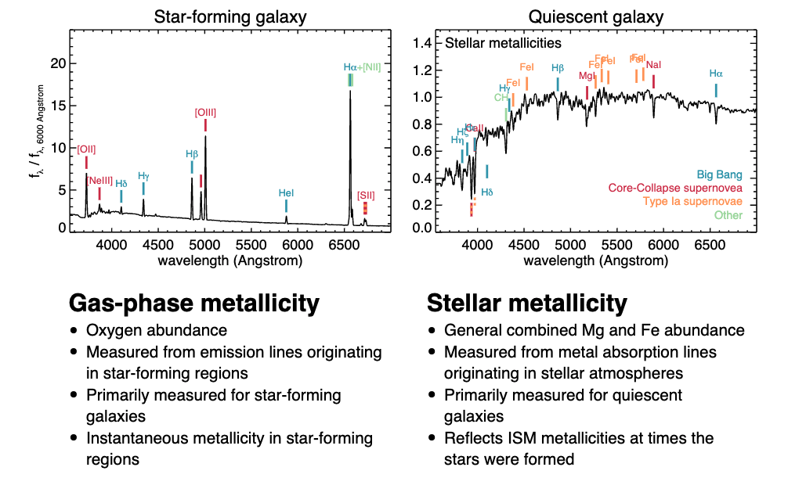
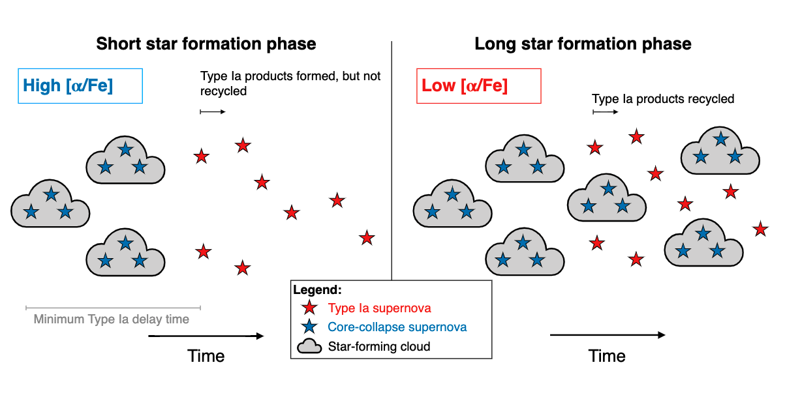

Chemical Evolution
Contents
6. Chemical Evolution¶
6.1. Terminology¶
In most work, you see something like \([X/H]\). This means “the number of atoms in X relative to the number of atoms of hydrogen, with the brackets denoting relative to the sun:
Another example:
For the Sun, we have:
\(X_\odot = 0.734\)
\(Y_\odot = 0.25\)
\(Z_\odot\) = 0.016
6.2. Sources of Heavy Elements¶
Stars return a substantial fraction of their initial masses to the ISM at the end of their lifetiems through stellar winds and SN explosions.
Low mass stars: (\(M<8M_\odot\)): He, C, N, O ejected during AGB phase
Massive stars: (\(M>8M_\odot\)): Produce more O and Mg compared to Fe. Enirch the ISM via stellar winds and final explosions as core-collpase SN (Type II)
Type Ia SN: C/O white dwarf accretes material from a clsoe companion and explodes once it reaches the Chandrasekhar limiting mass. Produces mainly Fe and O.
6.3. R and S Process Elements¶
R-process elements are formed in rapid neutron capture where neutrons get added to nucelus faster than the beta decay timescale.
Happens in SN explosions, BH/neutron star mergers
S-process is formed in AGB stars and in massive stars in the He burning core and convective C-burning shell, just prior to SN explosions
6.4. Metallicities of Galaxies¶
{kind=link}
Star Forming Galaxies
Measure gas-phase metallicty mostly through oxygen abundances
Measured from emission lines originating in star forming regions
Primarily measured for star-forming galxies
This measures the instantaneous metallicity in star-forming regions
Quiescent Galaxies
General combined Mg and Fe abundance
Measured from metal absorption lines in stellar atmospheres
Reflects the ISM metallicities at the time the stars were formed
Notes
Need a combination of Balmer and metal lines to break age/metallicity degeneracy
Doppler broadening makes individual line measurements impossible
6.4.1. Gas Phase Metallicity¶
Direct T method measures oxygen abundance by measuring line strengths of oxygen directly to measure the tempearture and we get \(n\) of oxygen directly
Strong line method: Combinating of strong lines correlated with oxygen abundance can be used. Calibration has lots of scatter.
6.5. Quasar Absorption Line Studies¶
High redshift neutral hydrogen clouds along the line of sight to quasars allow us to probe chemical evolution of the Universe
Finding Ly\(\alpha\) absoprtion gives us redshift + other metal lines we can measure
{kind=link}
6.6. Models of Chemical Evolution¶
6.6.1. Ingredients¶
Initial conditions
Pre-enriched material or primordial
Closed box or open system?
Birthrate function: \(B(M,t) = \psi(t) \xi(m)\)
\(\psi(t)\) is the star formation rate history set by the KS relation \(\psi(t) \propto \sigma_{gas}^n\).
\(\xi(m)\) is the IMF
Yields from CCSN depend on stellar mass and metallicity
6.6.2. Closed Box Model¶
Let’s first define some variables. We have:
\(\psi(t)\): SFR in solar masses per year
\(M_{g}(t)\) : gas mass at time \(t\)
\(M_s(t)\): Stellar mass at time \(t\)
\(M_t(t) = M_g(t) + M_s(t)\): Total mass at time \(t\) which is constant
\(Z(t)\): fraction of metals in the gas
Now, let’s discuss initial conditions:
At \(t=0\), \(M_t(0) = M_g(0)\) \textbf{and} \(Z(0) = 0\).
We have a few other assumptions:
No gas flow in or out of the system: \(\frac{\mathrm{d}M_t}{\mathrm{d}t} = 0\).
Instantaneous recycling approximation – no delay time between enrichment and recycling to gas reservoir.
We basically have an IMF with two mass bins: low mass stars keep stellar mass locked up, high mass stars return the mass to the system. (Recycling of material comes only from high mass stars. Low mass stars retain the mass).
We can calculate the stellar mass at time \(t\):
where \(\alpha\) defines the fraction of mass in long-lived stars. Another way to write this same equation:
We can write down:
where \(q \equiv \frac{\text{metals returned}}{\text{total mass}}\) ratio of mass in metals returned to that of the total mass at a given time. In other words, at some time \(t\) massive stars are returning metals to the system, which has some total mass at time \(t\).
We can re-write the left hand side of the equation above:
Now, we are going to use a little black magic to expand this…
Let’s start with equation 1
Here, we define \(y\equiv \frac{q}{\alpha}\). We can now define Equation 2, noting that \(\mathrm{d}M_g = - \mathrm{d}M_s\):
Let’s equate equation 1 and equation 2:
Let’s simplify:
Integrate:
where \(F_g\) is the gas fraction at time \(t\).
We end up wanting to observe the metallicity distribution \(\frac{\mathrm{d}N}{\mathrm{d}Z}\).
6.6.3. G-Dwarf Problem/Problems of the Closed Box Model¶
While the closed box model is nice, it drastically over predicts the number of low metallicity stars.
{kind=link}
It also cannot predict the observed mass-metallicty relation.
{kind=link}
6.6.4. Leaky Box Model¶
A leaky box model much better represents the data where we allow for gas inflow and outflow, as well as non-instantaneous recylcing
We have some observation evidence of infall from lyman alpha blobs at high redshift, high velocity clouds, and CGM lines being redshifted
The Lya blobs might be gas accretion onto DM haloes at high \(z\)?
{kind=link}
We see accretion in simulations all the time, though.
The accretion rate onto galaxies is higher at higher redshift and for migher mass halos.
Hot accretion is more dominant at later times and in more massive haloes; it’s also more quasi-spherical
Cold accretion is dominant in lower mass galaxies and is directed along filaments.
6.7. Core-Collapse vs. Type Ia Enrichment¶
{kind=link}
Core collapse supernovae produce \(\alpha\) elements like Mg, Oxygen and relatively low Fe yields. CCSN happen shortly after star formation and thus can be thought of as instantly enriching the ISM.
Type Ia SN originate from low mass stars and thus occur over a range of timescales. Thus instantaneous recycling is not a good approximation here.
This distribution is given by the delay time distribution (DTD), which gives the Ia supernova rate as a function of time following a burst of star formation.
For various models, we can plot the tracks stars should fall in for a given IMF, inflow/outflow rates, star formation histories, etc., and we get something like:
{kind=link}
it turns out you need both inflows and outflows properly tuned to actually match the data:
From my notes;
Initial plateau: “high-alpha sequence.” Turnover: “knee.” Secondary plateau. This is a diagram that basically traces the various enrichments for Type Ia vs. Type II SN. To get high alpha sequence, we need CCSN. This creates a high alpha population into the ISM. At some time, ISM gets enriched with iron and we have a drop-off in the ratio. Then, we settle in equilibrium. Various aspects of this diagram are sensitive to various SPS parameters. More high mass stars means more CC SN and thus high plateau. The exact shape and slope, location, etc., are set by the balance of star formation rate and inflow/outflow.
{kind=link}